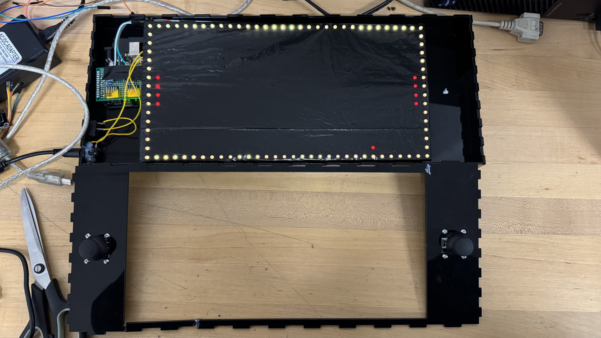

Circuit Diagram
The following diagrams show how both the joystick and matricies connect to the arduino.

Course: TECH 117 (Computer Engineering Technology, Fall 2025)
Instructor: Ph.D. Ana Rodrigues
Team Members:
This project uses two 16×8 LED matrices to create a Pong game controlled by two joysticks, with game logic managed by an Arduino Uno. The components are housed in a laser-cut 3mm acrylic case, making the design compact and easy to maintain. Beyond being a fun electronics build, the project also connects to the Good Health and Well-Being sustainability goal. Simple interactive games like Pong encourage positive social interaction and stress relief. The hands-on process of building and maintaining the system also supports mental well-being by promoting creativity and problem-solving. The acrylic design also reduces electronic waste by making repairs and part replacements easy, encouraging sustainable habits.
The following diagrams show how both the joystick and matricies connect to the arduino.
| Item | Qty | Unit Price (CAD) | Subtotal (CAD) | Source |
|---|---|---|---|---|
| Arduino Uno Rev3 | 1 | $20.00 | $20.00 | Arduino Store |
| 8x32 LED Matrix | 2 | $25.00 | $50.00 | 8x32 LED Matrix |
| Joysticks | 2 | $2.00 | $4.00 | Parts Kit |
| Switch | 1 | $1.00 | $1.00 | Parts Kit |
| Power Supply | 1 | $14.00 | $14.00 | Power Supply |
| Jumper Wires | 1 set | $2.00 | $2.00 | Parts Kit |
| Estimated Total | $92.50 | — | ||
The following image shows the assembled prototype in the casing.
The following Arduino code manages the Pong game system, controlling the LED matrix display, player inputs, and game logic. It handles paddle movement using the joysticks, updates ball position and collision detection, and continuously refreshes the LED matrix to render smooth gameplay.
//Main Game Logic
#include <Adafruit_GFX.h>
#include <Adafruit_NeoMatrix.h>
#include <Adafruit_NeoPixel.h>
#include <Arduino.h>
#include <stdint.h>
#include "game.h"
char debug_field[16][32] = {};
void run_game(Adafruit_NeoMatrix *matrix)
{
Game_settings game_settings{
0, 0, 0, 0, 0};
Ball ball = {3,
3,
1.2,
0.7};
uint8_t game_end = 0;
uint8_t next_cycle_ready = 1;
Joystick joystick_right{
1, 0, 0, 0};
Joystick joystick_left{
0, 0, 0, 0};
Paddle paddle_left{
1.0f, 6.0f};
Paddle paddle_right{
30.0f, 6.0f};
// display settings
run_main_menu(matrix, &joystick_left, &joystick_right, &ball, &game_settings);
reset_ball(&ball, &game_settings);
// main game loop
while (1)
{
if ((game_settings.left_score >= game_settings.max_score) || (game_settings.right_score >= game_settings.max_score))
{
break;
}
matrix->fillScreen(0);
clear_debug_field(debug_field);
matrix->drawRect(0, 0, FIELD_WIDTH, FIELD_HEIGHT, FIELD_OUTLINE_COLOR);
if (game_settings.scored)
{
show_score(matrix, &game_settings);
reset_ball(&ball, &game_settings);
}
read_joysticks(&joystick_left);
read_joysticks(&joystick_right);
update_paddle(&paddle_left, &joystick_left);
update_paddle(&paddle_right, &joystick_right);
update_ball(&ball, &paddle_left, &paddle_right, &game_settings);
draw_paddle(matrix, &paddle_left);
draw_paddle(matrix, &paddle_right);
draw_ball(matrix, &ball);
draw_debug_field(debug_field);
matrix->show();
while (!next_cycle_ready)
{
}
delay(30);
}
// display game over with score
display_game_over(matrix);
// Serial.println("Game Over");
delay(5000);
}
void reset_ball(Ball *ball, Game_settings *game_settings)
{
// range of speeds for the ball 0.1 to 0.5
// vy/vx < 0.5
//
float rnd = random(15, 35);
float square = ((float)game_settings->game_speed * game_settings->game_speed);
float vertical_comp = rnd / 100.0f * square;
float horizontal_comp = square - vertical_comp;
ball->xv = (sqrt(horizontal_comp) / 255 * BALL_MAX_SPEED);
ball->yv = (sqrt(vertical_comp) / 255 * BALL_MAX_SPEED);
if (game_settings->scored == 2) // going left
{
ball->xv = -ball->xv;
}
game_settings->scored = 0;
rnd = random(0, 50);
if (rnd < 25)
{
ball->yv = -ball->yv;
}
ball->x = 16;
ball->y = 8;
}
void update_ball(Ball *ball, Paddle *paddle_l, Paddle *paddle_r, Game_settings *game_settings)
{
ball->x += ball->xv;
ball->y += ball->yv;
// check for walls
// right paddle collision
if (ball->x > paddle_r->x && // if right paddle hit
(uint8_t)(ball->y + 0.5f) <= (uint8_t)(paddle_r->y + PADDLE_SIZE + 0.5f) // y < paddle max y
&& (uint8_t)(ball->y + 0.5f) >= (uint8_t)(paddle_r->y + 0.5f) // y > paddle y
)
{
ball->x = paddle_r->x - (ball->x - paddle_r->x);
ball->xv = -(ball->xv); // bounce off
}
// left paddle
if (ball->x < paddle_l->x && // if left paddle hit
(uint8_t)(ball->y + 0.5f) <= (uint8_t)(paddle_l->y + PADDLE_SIZE + 0.5f) // y < paddle max y
&& (uint8_t)(ball->y + 0.5f) >= (uint8_t)(paddle_l->y + 0.5f) // y > paddle y
)
{
ball->x = paddle_l->x + (paddle_l->x - ball->x);
ball->xv = -(ball->xv);
}
if (ball->x > FIELD_WIDTH_INDX) // hit right wall
{
ball->x = FIELD_WIDTH_INDX - (ball->x - FIELD_WIDTH_INDX);
ball->xv = -(ball->xv); // plus random
game_settings->scored = 2;
game_settings->left_score++;
}
else if (ball->x < FIELD_START_INDX) // hit left wall
{
ball->x = -(ball->x);
ball->xv = -(ball->xv);
game_settings->right_score++;
game_settings->scored = 1;
}
if (ball->y > FIELD_HEIGHT_INDX)
{
ball->y = FIELD_HEIGHT_INDX - (ball->y - FIELD_HEIGHT_INDX);
ball->yv = -(ball->yv);
}
else if (ball->y < FIELD_START_INDX)
{
ball->y = -(ball->y);
ball->yv = -(ball->yv);
}
}
void draw_ball(Adafruit_NeoMatrix *matrix, Ball *ball)
{
matrix->drawPixel((uint16_t)(ball->x + 0.5f), (uint16_t)(ball->y + 0.5f), BALL_COLOR);
// debug
debug_field[(uint8_t)(ball->y + 0.5f)][(uint8_t)(ball->x + 0.5f)] = '*';
}
void read_joysticks(Joystick *joystick)
{
joystick->prev_state = joystick->current_state;
if (joystick->is_right == 1)
{
joystick->x = analogRead(JOYSTICK_RIGHT_X);
joystick->y = analogRead(JOYSTICK_RIGHT_Y);
joystick->current_state = !digitalRead(JOYSTICK_RIGHT_BTN);
}
else
{
joystick->x = analogRead(JOYSTICK_LEFT_X);
joystick->y = analogRead(JOYSTICK_LEFT_Y);
joystick->current_state = !digitalRead(JOYSTICK_LEFT_BTN);
}
if (joystick->current_state && !joystick->prev_state)
{
joystick->pressed = 1;
}
else
{
joystick->pressed = 0;
}
}
void update_paddle(Paddle *paddle, Joystick *joystick)
{
if (joystick->x < 505 || joystick->x > 510)
{
float paddle_new_position = paddle->y + ((joystick->x / 1024.0f - 0.5f) * JOYSTICK_RESPONSIVNESS);
if (paddle_new_position > 0 && paddle_new_position < FIELD_HEIGHT_INDX - PADDLE_SIZE)
{
paddle->y = paddle_new_position;
}
}
}
void draw_paddle(Adafruit_NeoMatrix *matrix, Paddle *paddle)
{
matrix->drawLine(paddle->x, (paddle->y + 0.5f), paddle->x, (paddle->y + PADDLE_SIZE + 0.5f), PADDLE_COLOR);
// debug
//
int x = paddle->x;
int y0 = (int)(paddle->y + 0.5f);
int y1 = (int)(paddle->y + PADDLE_SIZE + 0.5f);
for (int y = y0; y <= y1; y++)
{
if (y >= 0 && y < 16)
{
debug_field[y][x] = '#';
}
}
}
void show_score(Adafruit_NeoMatrix *matrix, Game_settings *game_settings)
{
matrix->fillScreen(0);
matrix->drawRect(0, 0, FIELD_WIDTH, FIELD_HEIGHT, FIELD_OUTLINE_COLOR);
matrix->drawFastVLine(16, 0, 16, FIELD_OUTLINE_COLOR);
matrix->setTextColor(RED);
matrix->setCursor(2, 1);
matrix->print(game_settings->left_score);
matrix->setCursor(3, 8);
matrix->print(game_settings->right_score);
matrix->show();
delay(1500);
}
void run_main_menu(Adafruit_NeoMatrix *matrix, Joystick *joystick_left, Joystick *joystick_right, Ball *ball, Game_settings *game_settings)
{
float speed = 0;
float max_scores = 0;
uint8_t display_num = 0;
uint8_t start_game = 0;
while (1)
{
matrix->fillScreen(0);
matrix->drawRect(0, 0, FIELD_WIDTH, FIELD_HEIGHT, FIELD_OUTLINE_COLOR);
read_joysticks(joystick_left);
read_joysticks(joystick_right);
float value = -((joystick_right->x / 1024.0f - 0.5f) * JOYSTICK_RESPONSIVNESS_MENU);
if (joystick_right->pressed)
{
display_num++;
}
if (display_num == 0) // displaying number of scores select
{
matrix->setTextColor(RED);
matrix->setCursor(2, 6);
matrix->print(F("S:"));
matrix->setCursor(3, 6);
matrix->print((uint8_t)(max_scores + 0.5f));
if (((uint8_t)(max_scores + 0.5f) < 255 && value > 0.01) || ((uint8_t)(max_scores + 0.5f) > 0 && value < -0.01))
{
max_scores += value;
}
}
else if (display_num == 1) // displaying speed select
{
// displaying number of scores select
matrix->setTextColor(RED);
matrix->setCursor(2, 6);
matrix->print(F("V:"));
matrix->setCursor(3, 6);
matrix->print((uint8_t)(speed + 0.5f));
if (((uint8_t)(speed + 0.5f) < 255 && value > 0.01) || ((uint8_t)(speed + 0.5f) > 0 && value < -0.01))
{
speed += value;
}
}
else if (display_num == 2) // saving data and returning
{
game_settings->game_speed = (uint8_t)(speed + 0.5f);
game_settings->max_score = (uint8_t)(max_scores + 0.5f);
game_settings->left_score = 0;
game_settings->right_score = 0;
start_game = 1;
}
matrix->show();
if (start_game)
{
break;
}
delay(30);
}
}
void display_game_over(Adafruit_NeoMatrix *matrix)
{
matrix->fillScreen(0);
matrix->setTextColor(RED);
matrix->setCursor(2, 4);
matrix->print(F("END"));
matrix->drawRect(0, 0, 32, 16, FIELD_OUTLINE_COLOR);
matrix->show();
}
void test_screen(Adafruit_NeoMatrix *matrix)
{
const static uint16_t colors[] = {
matrix->Color(255, 0, 0), matrix->Color(0, 255, 0), matrix->Color(0, 0, 255)};
static int x = matrix->width();
static int pass = 0;
matrix->fillScreen(0);
matrix->setCursor(x, 4);
matrix->print(F("Howdy"));
if (--x < -36)
{
x = matrix->width();
if (++pass >= 3)
pass = 0;
matrix->setTextColor(colors[pass]);
}
matrix->drawLine(0, 0, 32, 16, 0xff00);
matrix->drawRect(0, 0, 32, 16, 0xff00);
matrix->show();
delay(15);
}
void draw_debug_field(char field[16][32])
{
for (uint8_t i = 0; i < 16; i++)
{
for (uint8_t j = 0; j < 32; j++)
{
if (field[i][j])
{
// Serial.print(field[i][j]);
}
else
{
// Serial.print(".");
}
// Serial.print(" ");
}
// Serial.println();
}
// Serial.println("\n\n");
}
void clear_debug_field(char field[16][32])
{
for (uint8_t i = 0; i < 16; i++)
{
for (uint8_t j = 0; j < 32; j++)
{
field[i][j] = 0;
}
}
}
//Sets up all the components needed to run a Pong game on LED matrices with joysticks.
#include <Adafruit_GFX.h>
#include <Adafruit_NeoMatrix.h>
#include <Adafruit_NeoPixel.h>
#include <stdint.h>
#define RED (uint16_t)0xf800
#define BALL_COLOR 0xf800
#define FIELD_OUTLINE_COLOR 0xff00
#define PADDLE_COLOR 0xf800
#define TEXT_COLOR 0xf800
#define FIELD_WIDTH 32
#define FIELD_HEIGHT 16
#define FIELD_WIDTH_F 32.0f
#define FIELD_HEIGHT_F 16.0f
#define FIELD_START_INDX 0.0f
#define FIELD_WIDTH_INDX (FIELD_WIDTH_F - 1.0f)
#define FIELD_HEIGHT_INDX (FIELD_HEIGHT_F - 1.0f)
#define JOYSTICK_RESPONSIVNESS 0.5f
#define JOYSTICK_RESPONSIVNESS_MENU 1.0f
#define BALL_MAX_SPEED 1.0f
#define PADDLE_SIZE 4.0f
#define JOYSTICK_RIGHT_X A2
#define JOYSTICK_RIGHT_Y A3
#define JOYSTICK_RIGHT_BTN 2
#define JOYSTICK_LEFT_X A1
#define JOYSTICK_LEFT_Y A2
#define JOYSTICK_LEFT_BTN 3
typedef struct
{
float x, y;
float xv, yv;
} Ball;
typedef struct
{
float x, y, v;
} Paddle;
typedef struct
{
int8_t is_right;
int16_t x, y;
uint8_t current_state;
uint8_t prev_state;
uint8_t pressed;
} Joystick;
typedef struct
{
uint8_t left_score;
uint8_t right_score;
uint8_t max_score;
uint8_t game_speed;
uint8_t scored;
} Game_settings;
void run_game(Adafruit_NeoMatrix *matrix);
void reset_ball(Ball *ball, Game_settings *game_settings);
void update_ball(Ball *ball, Paddle * paddle_l, Paddle * paddle_r, Game_settings *game_settings);
void draw_ball(Adafruit_NeoMatrix *matrix, Ball *ball);
void read_joysticks(Joystick *joystick);
void update_paddle(Paddle *paddle, Joystick *joystick);
void draw_paddle(Adafruit_NeoMatrix *matrix, Paddle *paddle);
void run_main_menu(Adafruit_NeoMatrix *matrix, Joystick *joystick_left, Joystick *joystick_right, Ball *ball, Game_settings *game_settings);
void show_score(Adafruit_NeoMatrix *matrix, Game_settings *game_settings);
void display_game_over(Adafruit_NeoMatrix *matrix);
void test_screen(Adafruit_NeoMatrix *matrix);
void draw_debug_field(char field[16][32]);
void clear_debug_field(char field[16][32]);
//Initializes display and joysticks
// Adafruit_NeoMatrix example for tiled NeoPixel matrices. Scrolls
// 'Howdy' across three 10x8 NeoPixel grids that were created using
// NeoPixel 60 LEDs per meter flex strip.
#include <Adafruit_GFX.h>
#include <Adafruit_NeoMatrix.h>
#include <Adafruit_NeoPixel.h>
#include "stdint.h"
#include "game.h"
#define PIN 10
// MATRIX DECLARATION:
// Parameter 1 = width of EACH NEOPIXEL MATRIX (not total display)
// Parameter 2 = height of each matrix
// Parameter 3 = number of matrices arranged horizontally
// Parameter 4 = number of matrices arranged vertically
// Parameter 5 = pin number (most are valid)
// Parameter 6 = matrix layout flags, add together as needed:
// NEO_MATRIX_TOP, NEO_MATRIX_BOTTOM, NEO_MATRIX_LEFT, NEO_MATRIX_RIGHT:
// Position of the FIRST LED in the FIRST MATRIX; pick two, e.g.
// NEO_MATRIX_TOP + NEO_MATRIX_LEFT for the top-left corner.
// NEO_MATRIX_ROWS, NEO_MATRIX_COLUMNS: LEDs WITHIN EACH MATRIX are
// arranged in horizontal rows or in vertical columns, respectively;
// pick one or the other.
// NEO_MATRIX_PROGRESSIVE, NEO_MATRIX_ZIGZAG: all rows/columns WITHIN
// EACH MATRIX proceed in the same order, or alternate lines reverse
// direction; pick one.
// NEO_TILE_TOP, NEO_TILE_BOTTOM, NEO_TILE_LEFT, NEO_TILE_RIGHT:
// Position of the FIRST MATRIX (tile) in the OVERALL DISPLAY; pick
// two, e.g. NEO_TILE_TOP + NEO_TILE_LEFT for the top-left corner.
// NEO_TILE_ROWS, NEO_TILE_COLUMNS: the matrices in the OVERALL DISPLAY
// are arranged in horizontal rows or in vertical columns, respectively;
// pick one or the other.
// NEO_TILE_PROGRESSIVE, NEO_TILE_ZIGZAG: the ROWS/COLUMS OF MATRICES
// (tiles) in the OVERALL DISPLAY proceed in the same order for every
// line, or alternate lines reverse direction; pick one. When using
// zig-zag order, the orientation of the matrices in alternate rows
// will be rotated 180 degrees (this is normal -- simplifies wiring).
// See example below for these values in action.
// Parameter 7 = pixel type flags, add together as needed:
// NEO_RGB Pixels are wired for RGB bitstream (v1 pixels)
// NEO_GRB Pixels are wired for GRB bitstream (v2 pixels)
// NEO_KHZ400 400 KHz bitstream (e.g. FLORA v1 pixels)
// NEO_KHZ800 800 KHz bitstream (e.g. High Density LED strip)
// Example with three 10x8 matrices (created using NeoPixel flex strip --
// these grids are not a ready-made product). In this application we'd
// like to arrange the three matrices side-by-side in a wide display.
// The first matrix (tile) will be at the left, and the first pixel within
// that matrix is at the top left. The matrices use zig-zag line ordering.
// There's only one row here, so it doesn't matter if we declare it in row
// or column order. The matrices use 800 KHz (v2) pixels that expect GRB
// color data.
Adafruit_NeoMatrix matrix = Adafruit_NeoMatrix(32, 8, 1, 2, PIN,
NEO_TILE_TOP + NEO_TILE_ROWS + NEO_TILE_ZIGZAG + NEO_MATRIX_TOP + NEO_MATRIX_LEFT + NEO_MATRIX_COLUMNS + NEO_MATRIX_ZIGZAG,
NEO_GRB + NEO_KHZ800);
void setup()
{
pinMode(JOYSTICK_RIGHT_BTN, INPUT);
pinMode(JOYSTICK_LEFT_BTN, INPUT);
randomSeed(analogRead(A5));
Serial.begin(9600);
while (!Serial)
{
; // wait
}
matrix.begin();
matrix.setTextWrap(false);
matrix.setBrightness(10);
matrix.setTextColor(TEXT_COLOR);
}
void loop()
{
while (1)
{
run_game(&matrix);
}
test_screen(&matrix);
}
This project implemented the game Pong using two 8x16 LED matrices controlled by an Arduino. While the game currently runs only in the terminal, it successfully demonstrates key concepts such as microcontroller programming and matrix display control. As a prototype, it provides a solid foundation that can be further developed with improved gameplay, more games and a physical LED display, making it a versatile system that can propose many unique functions due to the universality of the hardware
The following external resources showcase related Arduino projects that incorporate LED matrices, joystick control, and custom enclosure designs.